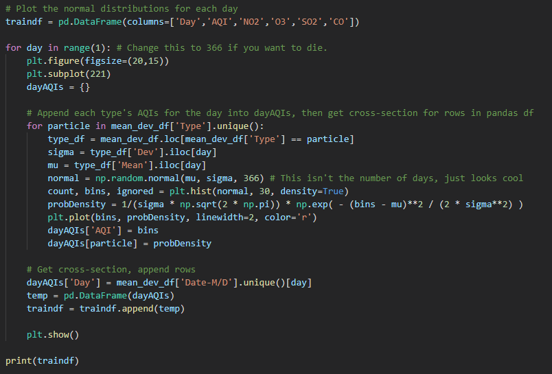

Introduction
In this tutorial, we will explore how to classify major pollutants in the air given a day and the Air Quality Index in the United States. Having an excellent AQI is important to people who have respiratory problems. The dataset we chose tracks Ozone, Nitrous Dioxide, Sulfur Dioxide, and Carbon Monoxide in the local air of states. These chemicals account for 3/5 of the metrics used for the standardized AQI rating for a location.
Ground-level Ozone can aggravate existing respiratory diseases and also lead to throat irritation, headaches, and chest pain. Breathing in high levels of Nitrogen Dioxide increases the risk of respiratory problems. Coughing and difficulty breathing are common and more serious health issues such as respiratory infections can occur with longer exposure. Exposure to Sulfur Dioxide can lead to throat and eye irritation and aggravate asthma as well as chronic bronchitis. Carbon Monoxide is a colorless and odorless gas and when inhaled at high levels can cause headache, nausea, dizziness, and vomiting. Repeated long-term exposure can lead to heart disease.
With this tutorial, we will use a training data set comprised of states with a high AQI of nitrous dioxide and then use this to classify a few other states’ major pollutant contributor to their AQI. We will employ a gaussian classification system for this and explore how these can be visualized and tested for efficacy.
Requirements
- Python >= 3.8
- Pandas
- NumPy
- Matplotlib
- SciPy
- US Pollution Data Set: https://www.kaggle.com/sogun3/uspollution
Data Gathering
No web scraping was used directly in this project, but the dataset was collated through scraping of the database at https://aqs.epa.gov/aqsweb/airdata/download_files.html. Alternatively, one could have done this directly or web scraped across various weather websites to obtain an average for the state/locations one would be interested in. This may prove meaningful in a future project if trying to get a more accurate and dense model, especially if dealing with counties or cities rather than entire states.
For this tutorial, we chose the data set because of its cleanliness and ease-of-access to our project goal. As we will see later in the tutorial, not every state has continuous coverage of the AQI for every date, so to get reasonable results, we’ve restricted our training set for the classifier to a small subset of the states. First, we will use Pandas to import the CSV data, so import Pandas and use pd.read_csv to load in the file.
Data Ethics
Data Ethics is an important thing when it comes to gathering data for a project. If you do it in a poor way, there can be unintended consequences that appear. For example, if you were using a set of data for training material for a recognition software, you would need a diverse data set. If you do not use one, then it would not be able to recognize anyone who tried it. If you have looked through the data set for this project, you may have noticed that we do not have data for every state. With the data collection, not every state provided the same amount of data, so we have gaps with no data available.
In this project we were taking the average amount of NO2 AQI, O3 AQI, SO2 AQI, and CO AQI for a specific date. An unethical thing that we wanted to avoid is just to use data from other dates around the time because that would not give results that are misleading. Instead of using the misleading data, we decided to omit the states who did not have any data for the specific date we chose. We also decided to omit any states that did not appear on the US map and any countries that were not a part of the United States.
Data Cleaning
Data isn’t always perfect for every use case, and this one is no exception. The most noticeable is the “Unnamed” column which comes from the index of the CSV. Second, we will want to filter out any states listed as “Country of Mexico” and “District of Columbia” to retain only the 50 U.S. states in the dataset. We will employ standard data cleaning tools like dropna and drop_duplicates to clean missing data as well. For our project, we only want to keep the columns for 'State', 'Date Local', 'NO2 AQI', 'O3 AQI', 'SO2 AQI', 'CO AQI' for each row.
You’ll notice that we removed a few of the states from the dataset initially as well. This is because we will use these states to test our classifier later to determine its accuracy.
Analysis
Now that we have all of our data collected and cleaned up, we can start playing around with it. For the goal of this project, we want to find the means for each day of the year for a given state. For instance, the AQI of nitrous dioxide in Colorado on every Jan 1 from 2001-2016 (the epoch of this data set). This will give us an average AQI for every day of the year for multiple states. We can then find the average of these different states’ AQIs for each day to create a mean curve representing the average AQI for our training set.
Unfortunately, if we’re trying to analyze trends, this data can get very ‘muddy.’ To alleviate this issue, we can smooth the curve using Gaussian filtering, which will make the trends much clearer. Additionally, it will allow us to compute more useful first and second derivatives for determining local maxima and inflection points for study by a computer. Although this is not the goal of the project, it could prove useful in another project on this dataset.

An interesting pattern emerges from these graphs: There are noticeable times of the year where one pollutant clearly dominates all others. It seems reasonable to ask, can we use this data to classify what pollutant is causing the damage by only knowing the AQI and the time of year? The answer is a yes!
What we will employ is a Gaussian classification system, which will take the mean and standard deviation of this trend and use it to determine the probabilities of a major pollutant being the major cause of levels based on the day. The standard deviation measures uncertainty in the data, which is where the probabilities come into play. For now, we will use our original, noisy mean graph rather than the smooth curve for this, which may seem like a harder task, but it means a higher accuracy for the computer.
First we’ll need to return the mean and std deviation with calls to our plotter, which can be used to create a Pandas dataframe which we can easily use to calculate and store these probabilities.
For funsies, we will show the normal distribution plot of the probability density functions (a fancy name for the cool normal distribution curve we get over the histogram) for each pollutant and their overlap to get a better understanding of how this probability is being calculated. Next, we’ll store all of these into a new dataframe that will act as our training data set.
Finally, we can repeat our original process for calculating the mean and std dev for a few other states in our testing set to determine its accuracy. The final output is our total accuracy of our model vs reality. Pretty accurate!